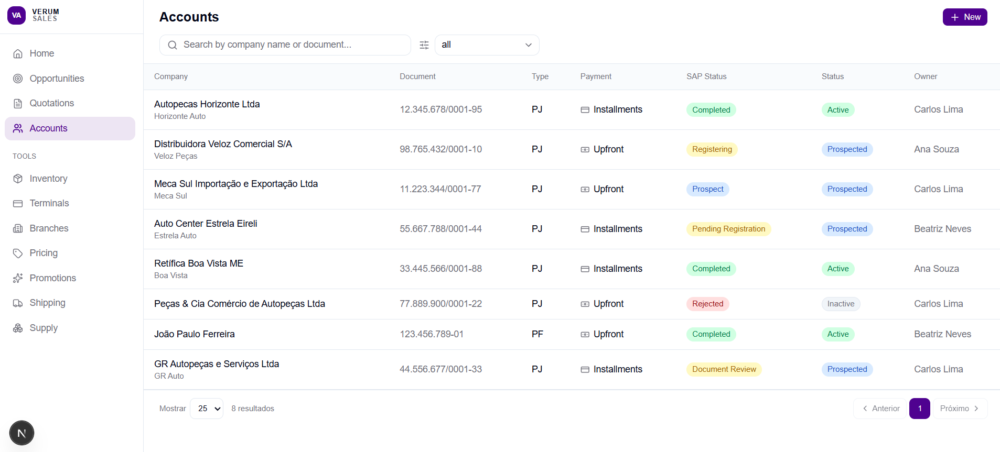
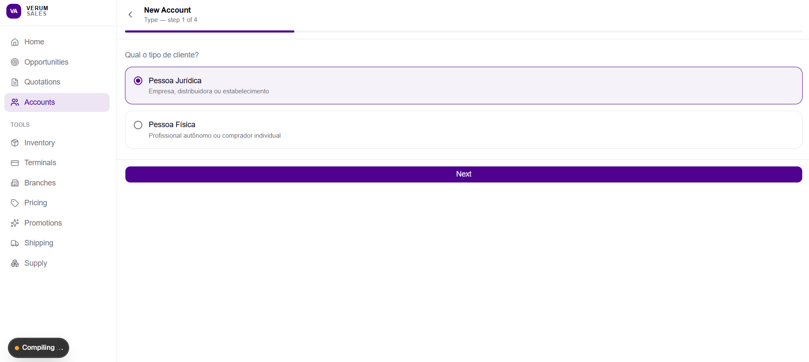
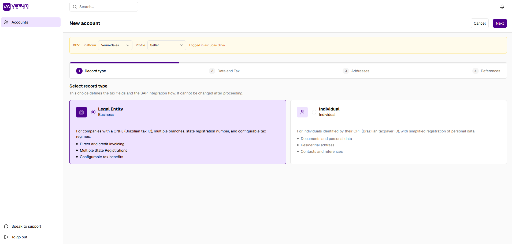
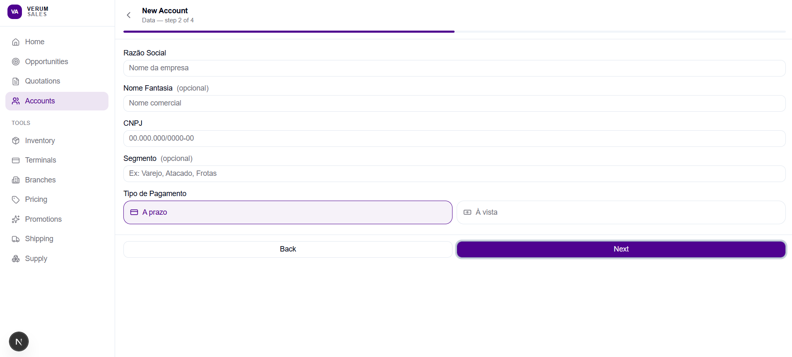
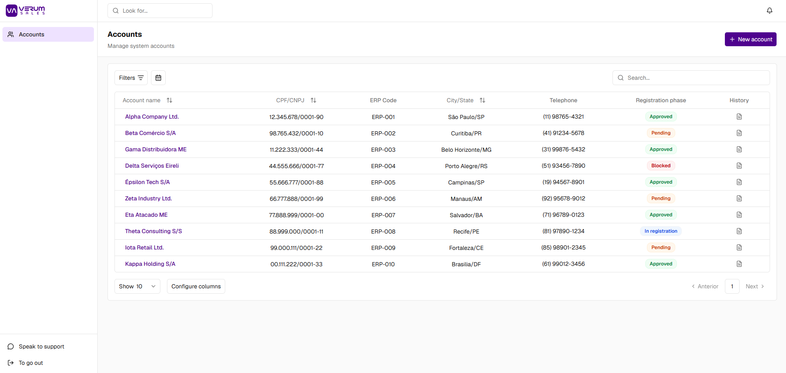

Design Engineering · Verum Sales Global
What building the same product twice taught me about the difference between designing screens and designing systems.
Verum Global and Verum Sales Global (VSG) were built for the same client ecosystem, solving adjacent problems in the same domain. On paper, the second project should have been easier — familiar context, established relationships, clearer scope.
In practice, it forced me to confront something I had avoided in the first pass: the difference between building something that works and building something that scales.
This case is not about a UX breakthrough or a conversion lift. It is about what happens when a designer starts writing production code, ships a product, watches it bend under its own weight, and gets a second chance to do it right.
Verum Global delivered. The product worked. But when the client came back to expand it, the cracks were immediate.
The core issue was not a lack of skill. It was a lack of architecture before execution. I had used AI as a code generator. I had not used it as a design partner.
Before — Verum Global

Accounts list in Verum Global. Functional — but column grouping, status logic, and visual hierarchy were all ad hoc decisions made per screen.
When VSG kicked off, I spent the first week building nothing visible.
Instead, I defined the system:
Verum Global
Build components when needed. Conventions emerge implicitly. AI generates output.
VSG
Build the system, then build the product inside it. AI critiques architecture before execution.
Only after those foundational components existed did I build the first real screen. The AI's role changed too — instead of "build me a table for this data," I was prompting with "given this PageLayout contract and these token values, implement this screen — flag any deviation from the established pattern."
Three artifacts that did not exist in Verum Global:
Artifact 01
12 components defined with their props and behavioral rules before any product screen was assembled. When a new module was added mid-project, onboarding it to the existing system took hours, not days. Zero rework on new module integration.
Artifact 02
Every screen in VSG inherits from the same PageLayout. Responsive behavior, container constraints, and slot availability are defined once. When the client requested layout changes, the adjustments propagated from one source of truth rather than requiring per-screen edits.
Artifact 03
The most consequential change was asking AI to critique decisions, not just execute them. Before committing to a component structure, I described the intended behavior and asked where it would break at scale. This caught two structural decisions in VSG that would have produced the same class of problem I experienced in Verum Global.
Code review was also automated: each task went through a spec compliance pass ("does the code do what was asked?") and a quality pass ("is the code well-constructed?") — catching HTML invalidity, Radix prop mismatches, and accessibility failures before they reached production.
The Accounts module was built entirely inside the VSG system and shows the delta most clearly.
Before — Verum Global: New Account Step 1

Two radio options. No explanation of what each means, what fields they unlock, or why the choice matters. Functional — but it transfers the cognitive load entirely to the user.
After — VSG: New Account Step 1

Same choice — two account types — but now with context. Each card explains what the type means, what fields it unlocks, and what compliance rules apply. The stepper communicates total scope upfront. The warning message ("This choice defines the tax fields and the SAP integration flow. It cannot be changed after proceeding.") surfaces a constraint that was invisible before.
Before — Verum Global: New Account Step 2

Flat form fields with no visual grouping. No distinction between required and optional. No feedback on field-level constraints. Every form in Verum Global was built this way — independently, without a shared layout contract.
After — VSG: Accounts List

The same data surface, rebuilt inside the DataTable system. Registration phase replaces the scattered status columns. "Configure columns" is a first-class feature, not an Excel workaround. The table is built once; every new account type inherits the same column rules.
Key Decision — RadioGroup as Semantic Primitive
The original PJ/PF cards in Verum Global used button elements with a radio visual — purely cosmetic. A review pass flagged the absence of a semantic primitive: no RadioGroup, no keyboard navigation, no screen reader signaling.
In VSG, the type selection was rebuilt with Radix UI RadioGroup. The card container became a label (making the entire area clickable without JS). State propagation follows the Radix/shadcn convention. The fix added zero visual complexity and closed an accessibility gap that would have been invisible in a standard review.
Key Decision — FormCard + FormGrid as Layout Contract
In Verum Global, every section card repeated the same string of classes inline: bg-card border border-border rounded-md p-4 flex flex-col gap-4. No abstraction, no shared contract — just copied and slightly wrong in each new place.
In VSG, FormCard and FormGrid became global components. The rule "when a row has 3+ fields of different semantic weight, the first field takes 50% and the rest divide the remaining half" is now an API, not a convention you have to remember. Any new form section inherits the contract.
Metrics are process-level and NDA-compliant.
The less quantifiable but more significant outcome: cross-screen inconsistency was reduced from drift to deliberate exception. Any deviation from the VSG system was a choice — not an accident.
Version decisions, not just components. The component registry captures what was built, not the reasoning behind it. The next project should include decision logs alongside component documentation — so a developer joining mid-stream understands not only the rule but why it exists.
Systematize the AI critique prompts. The architectural review prompts I used in VSG were informal — run when I remembered to. The next version should be a standard template: a fixed prompt that runs against every new component before it's merged, checking for slot consistency, token compliance, and behavioral alignment. That turns a useful habit into a repeatable process.
The transition from product designer to design engineer is not about learning to code. The transition is about changing what you consider a design deliverable.
In Verum Global, my deliverable was screens. In VSG, my deliverable was a system that generates screens consistently, scales to new requirements without rework, and communicates its own rules to anyone who joins.
That shift — from output to architecture, from execution to constraint design — is what I am bringing to the next team.